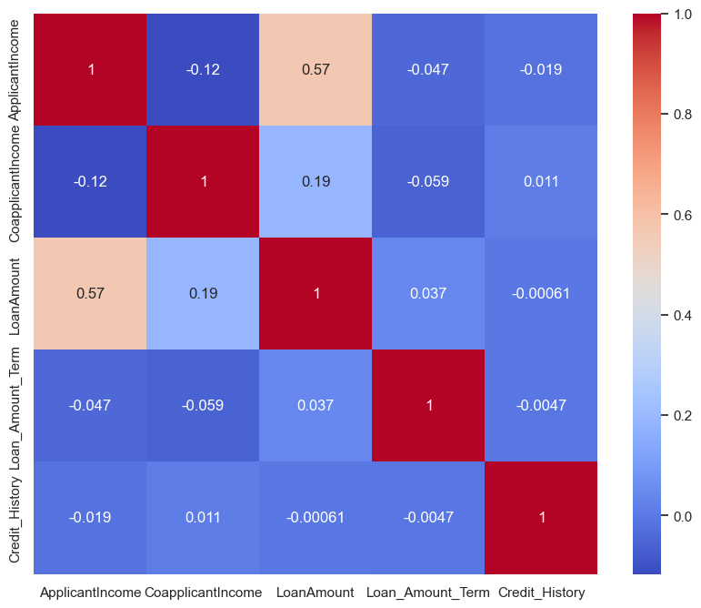

Used the seaborn heatmap to visualize null values in each column

Hetmap geographic distribution of data
data visualization technique that uses color-coded representations
to display the magnitude of values
Gender
From the chart above results we can infer that,
From the chart above, we can conclude that
male applicants have higher percentage
of loan approval than female applicants and we
move more male than female applying for loan
Credit History
From the chart above
results we can infer that, the higher
percentage of loan approval is for customers
with good credit history followed bycustomers
with medium credit history and then the bad
Material
From the chart above,
we can conclude that the we have more
married thand single customer approved for loan
Self Employed
From the chart above, we can see
that non self employed applicant were more
approved for loan that the self employed applicant
Eduction
From the chart above, we can conclude** that the applicants
who are graduate were in higher percentage of loan approval than non-graduate applicants.
Property Area
From the chart above results we can infer that, the higher
percentage of loan approval is for semi-urban houses followed by urban and rural houses.
Dependents
From the chart, we can see that the number of dependents may automatically affect** the approvals of home loans. There is a
higher chance of getting home loan approval
for applicants who have less number of dependents or no dependents.
Scatter Plot
We Used Scatter Plot To know about the Data how is distribution and we see the column
Data applicant income is imblacend and we need to solve this